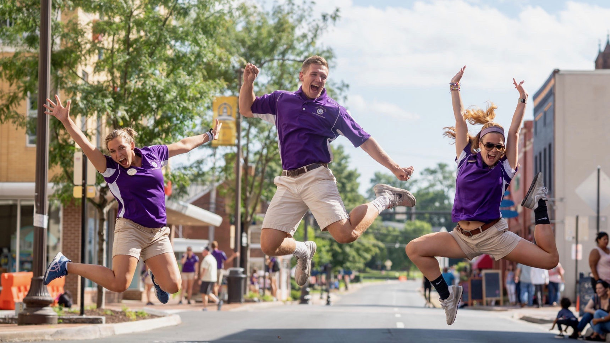
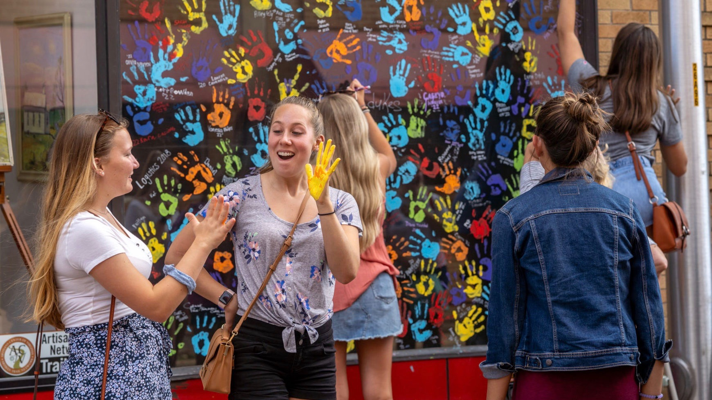
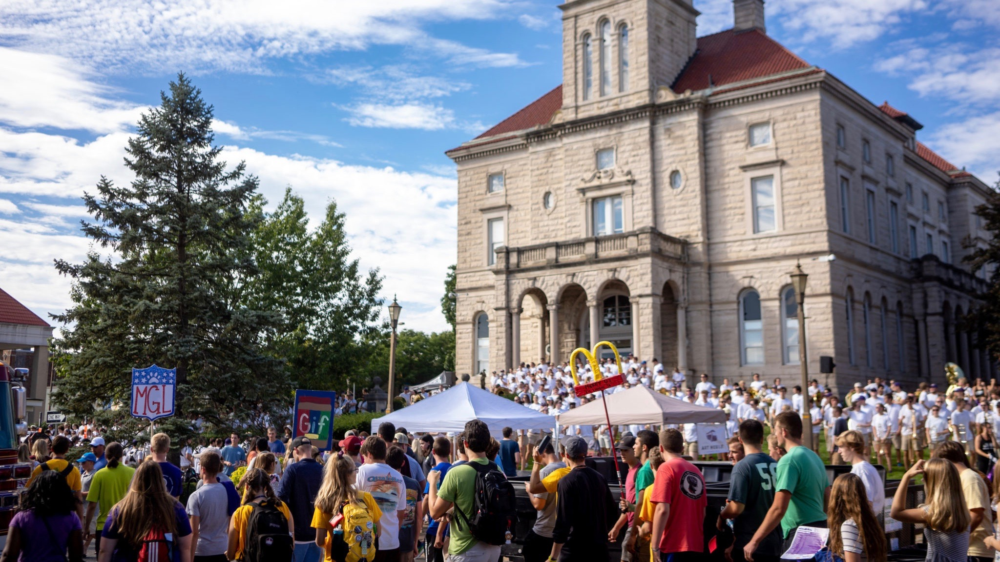
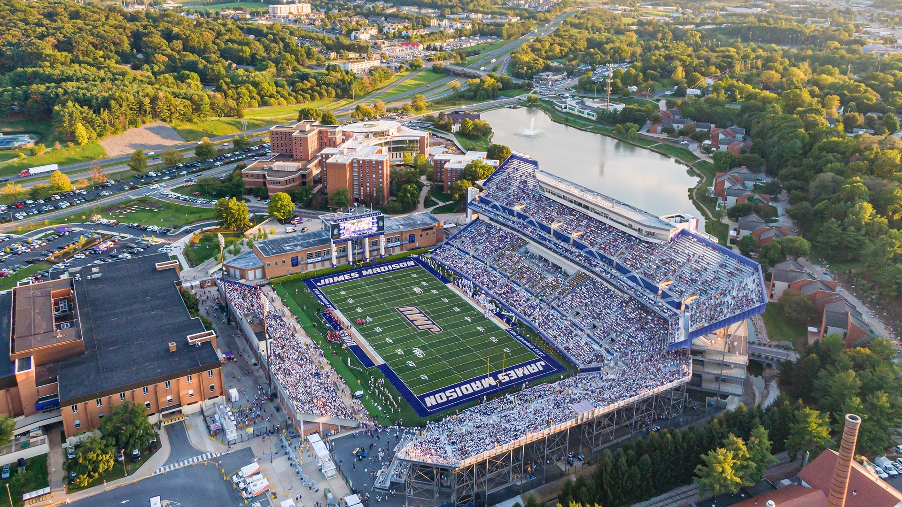

Block Party in the 'Burg
Many consider the relationship between JMU and the local community to be symbiotic, in that both benefit from each others presence. The students feel welcomed and supported by the downtown area because of the community feel it provides, while the local community feels the economic, developmental, and social benefits of JMU. The downtown area also provides students with a myriad of things to do.
JMU students have the opportunity to experience this close community feeling almost as soon as they arrive at school. During orientation week, downtown Harrisonburg welcomes the new students by opening up its shops and providing fun activities for them to experience. All intersections around court square are closed for the "Block Party in the 'Burg," so that students can experience downtown at its best.

Hand Painting at Larkin Arts
JMU has been a major factor in the commercial development of Harrisonburg and Rockingham. The influx of individuals, whether students or faculty, has helped broaden the community and brought about a lot of positive change and growth within the city. A generation ago, the downtown area of Harrisonburg did not attract many visitors, however, with funds and population growth, the downtown area has flourished. Downtown Harrisonburg received the designation of the first "Arts and Cultural District in Virginia" in 2001, and "Virginia's first Culinary District" in 2014. The city transformed itself into a vibrant and diverse center, while still maintaining the local feeling of community.
One way that Harrisonburg shows new student the city's love of the arts is with the handprint wall at Larkin Arts, which represent the community and togetherness.

Experiencing Community
JMU not only plays an economic role in the local community, but contributes to the community with their presence and community outreach programs as well. Whether volunteering in the local community, or helping organize events to promote businesses, the students of JMU care about the city they live in and want to give back.

A Community Tradition
JMU has made a cultural impact on the community with the music, theater, and sports programs they put on for everyone to enjoy. They contribute to the arts scene that Harrisonburg prides itself on, however, sports and home games are just as important as the arts here. Weekend football games draw not only the students, but many locals as well, contributing to the community feeling between the town and the university. The athletic programs not only fill up stadiums, but hotels and restaurants as well, which supports the local economy.